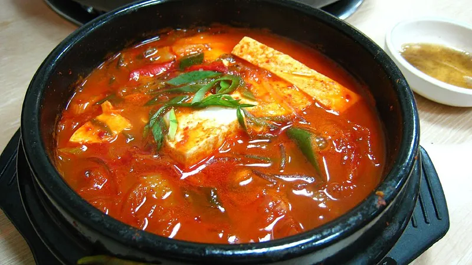

Soup汤 · Korean韩
Kimchi and Tofu Stew (Kimchi-jjigae)泡菜豆腐汤（kimchi-jjigae）
Korea's everyday pot. Well-fermented, sour kimchi is stir-fried with pork belly first, then simmered 20 minutes with water and kimchi juice, with tofu added last. Fresh kimchi will not give the same flavour; it should be properly sour.韩国人最日常的一锅汤：发酵到发酸的泡菜先和五花肉炒出香，再加水和泡菜汁炖二十分钟，最后放豆腐。新鲜泡菜做不出这个味，要用放熟的酸泡菜。

Ingredients食材
- Kimchi泡菜 350 g · 350 g (about 1 1/2 cups) well-fermented cabbage kimchi, plus 50 mL of its juice已经发酸的白菜泡菜 350 克（约 1 又 1/2 杯）和 50 毫升泡菜汁 kimchi that has sat open 2-3 weeks is best; a fresh jar tastes flat开瓶后放了 2–3 周的最好，新开的鲜泡菜效果差
- Pork belly五花肉 120 g · 120 g thin-sliced pork belly, cut in 3 cm pieces五花肉薄片 120 克，切 3 厘米 pork shoulder works too也可以用猪颈肉或猪肩肉
- Firm tofu老豆腐 300 g · 1 block (about 300 g) firm tofu, cut in 1 cm slabs老豆腐 1 块（约 300 克），切 1 厘米厚的大片
- Onions洋葱 80 g · half a small onion, sliced半个小洋葱，切丝
- Garlic大蒜 12 g · 3 cloves, minced3 瓣，切碎
- Gochujang韩式辣酱 17 g · 1 tbsp gochujang1 汤匙韩式辣酱
- Sesame oil香油(芝麻油) 7 g · 1/2 tbsp, for frying the pork1/2 汤匙，炒肉用
- Sugar白糖 4 g · 1 tsp, as needed1 茶匙，按需
- Soy sauce生抽 9 g · 1/2 tbsp, as needed1/2 汤匙，按需
- Green onions大葱/小葱 20 g · 2 stalks, sliced on the diagonal2 根，切斜段
- Short-grain rice短粒米(寿司米) 120 g · about 2/3 cup dry rice, cooked for 2 bowls米约 2/3 杯，煮成 2 碗饭
Weights are as bought, before trimming or peeling. Costco pack sizes and availability vary; see each ingredient page.重量为买回来的原重（去皮去骨之前）。Costco 规格与有无随时变化，点食材名看详情。
Method做法
- Cut the kimchi into 3 cm pieces and keep its juice.泡菜切成 3 厘米的段，汁水留着。
- Heat the sesame oil in a heavy pot over medium heat and fry the pork 3 minutes until the fat renders and the edges turn golden.厚底锅中火烧热芝麻油，放入五花肉，煎 3 分钟，煎到出油、边缘微黄。
- Add the kimchi and stir-fry 5 minutes until soft, darker and slightly toasty.放入泡菜，中火炒 5 分钟，炒到变软、颜色变深并有点焦香。
- Stir in the garlic and gochujang for 1 more minute.加蒜末和辣酱，再炒 1 分钟。
- Pour in the 50 mL kimchi juice and 450 mL water and bring to a boil over high heat.倒入 50 毫升泡菜汁和 450 毫升水，大火烧开。
- Reduce to medium-low, cover and simmer 20 minutes until the kimchi is soft and the pork cooked through.转中小火，盖盖煮 20 分钟，直到泡菜软烂、肉煮透。
- Add the onion and tofu and simmer 5 minutes so the tofu absorbs the broth.放入洋葱和豆腐，煮 5 分钟，让豆腐吸饱汤汁。
- Taste: add sugar if it is too sour or soy sauce if it is bland, a little at a time.尝味：太酸加糖，太淡加酱油，一次只加一点。
- Scatter the green onion and serve very hot with rice.撒葱段，趁热配米饭吃。
Keys to success成功要点
- Use properly sour kimchi; the tang and depth come from fermentation, and fresh kimchi tastes only of chili.要用发酵到发酸的泡菜：酸味和风味物质在发酵中产生，鲜泡菜煮出来只有辣，没有深度。
- Fry the kimchi with the pork before adding liquid; hot fat toasts it and builds the base flavour.泡菜要先和肉一起炒：热油把泡菜里的糖和油脂炒香，汤才有浓郁的底味。
- Add the tofu last; cooked long it turns spongy and firm, while 5 minutes keeps it tender.豆腐最后放：煮太久豆腐变得多孔发硬，最后煮 5 分钟刚好嫩。
- Kimchi is already salty, so do not salt early; adjust only at the end.泡菜本身很咸，先别加盐，要放最后尝了再调。
Common problems常见失败与补救
- The stew is too sour汤太酸
Add 1 tsp sugar and simmer 2 more minutes; next time use less kimchi juice and more water.加 1 茶匙糖，再煮 2 分钟；下次少放泡菜汁，多加水。 - The stew is too salty汤太咸
Add hot water and another piece of tofu and simmer 3 minutes; next time leave out the soy sauce at first.加热水和一块豆腐，再煮 3 分钟；下次不要先放酱油。 - The broth is flat汤没有深度、味道平
Simmer 10 more minutes and add half a spoon of gochujang; next time stir-fry the kimchi a full 5 minutes and use pork.再煮 10 分钟，加半勺辣酱；下次泡菜要炒够 5 分钟，汤里放一点猪肉。
Watch it done视频参考
Aaron and Claire's easy kimchi stew, about eleven minutes with nearly 600,000 views, titled as something a college student can make.Aaron and Claire 的 10 分钟泡菜汤，约 11 分钟，近六十万播放，标题说学生也能做。
Maangchi's kimchi stew (kimchi-jjigae), about twelve minutes with over six million views, one of the most watched explanations of the dish.Maangchi 的泡菜汤（kimchi-jjigae），约 12 分钟，六百多万播放，是这道菜里最多人看的讲解之一。
Videos load only when you tap them (youtube-nocookie). Creators are credited; we do not host their videos.点了才加载视频（youtube-nocookie）。署名原作者，本站不托管视频。
Nutrition营养
| Energy热量 | 734 kcal |
| Protein蛋白质 | 25.1 g |
| Fat脂肪 | 41.4 g |
| of which saturated其中饱和脂肪 | 12.6 g |
| Carbohydrate碳水化合物 | 68.1 g |
| Fibre膳食纤维 | 8.7 g |
| Sodium钠 | 1754 mg |
High sodium钠偏高 Sodium tiers: under 345 mg lower, 345-689 mg moderate, 690 mg and above high (this site's tiers; 15% of the 2,300 mg daily reference = 345 mg).钠分档：低于 345 mg 较低，345–689 mg 中等，690 mg 及以上偏高（本站分档；345 mg ＝ 每日参考 2300 mg 的 15%）。
Computed from the Canadian Nutrient File (Health Canada) with the weights above; oil and sauces are counted in full. Real dishes differ.按加拿大营养素数据库和上面的重量计算；油和酱汁按全量计入，实际会略低。
Good to know适合 / 需注意
- About 25.1 g protein per serving, a protein-rich meal (adult reference intake roughly 50-60 g/day; needs vary).每份蛋白质约 25.1 g，属于蛋白质较高的一餐（成人每日参考量约 50–60 g，个体差异大）。
- About 8.7 g fibre per serving, a good amount (Canadian adult reference 25-38 g/day).每份膳食纤维约 8.7 g，较多（加拿大成人每日参考 25–38 g）。
- About 1754 mg sodium per serving (about 76% of the 2,300 mg daily reference), on the high side; use less soy sauce or salt, and pair with unsalted sides.每份钠约 1754 mg（约占每日参考 2300 mg 的 76%），偏高；少放酱油或盐，或搭配无盐主食与蔬菜。
- About 12.6 g saturated fat per serving (daily reference about 20 g), on the high side; use a leaner cut or remove skin.每份饱和脂肪约 12.6 g（每日参考约 20 g），偏高；可换瘦肉部位或去皮。
- Contains chilli; reduce or leave it out for children and anyone who avoids heat.含辣，不吃辣的人和小朋友可减量或不放。
- Contains allergens: Crustaceans, Fish, Sesame, Soy, Wheat / gluten.含过敏原：甲壳类、鱼、芝麻、大豆、小麦/麸质。
Kimchi and gochujang make this high in sodium, so people watching salt may want less of the broth. Tofu and pork give protein, and with rice it is a full meal.泡菜和辣酱让钠含量很高，需要控制盐分的人可以少喝汤；豆腐和猪肉提供蛋白质，配米饭刚好一餐。